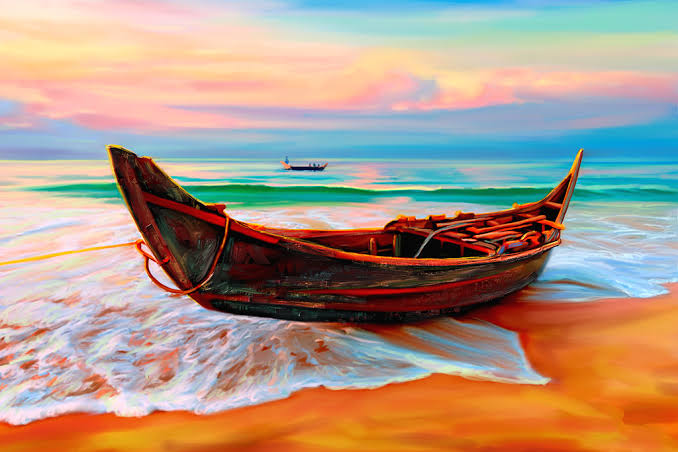
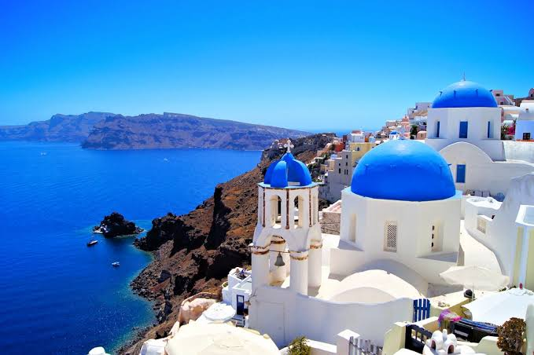
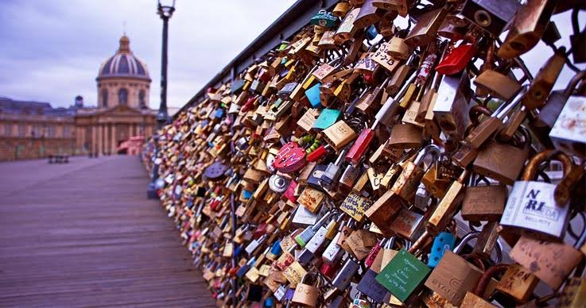
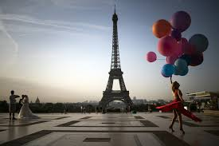
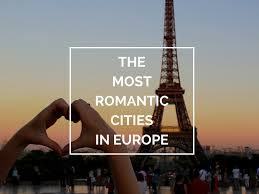
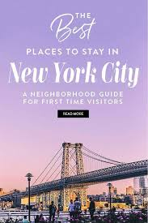
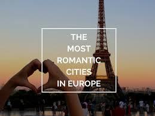
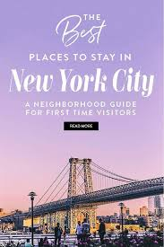
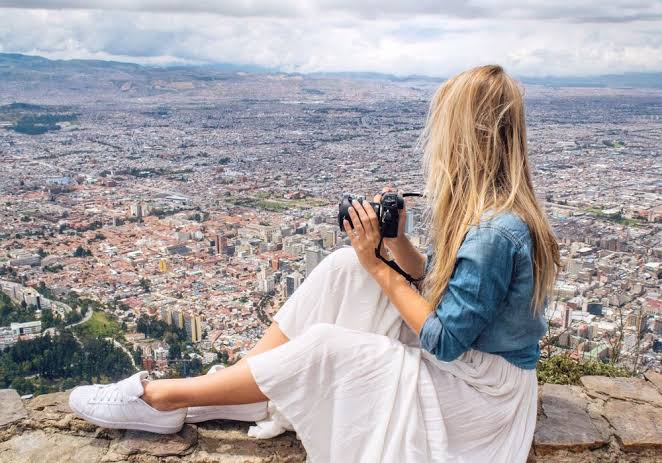

A FANTASTIC INTRODUCTION TO ATHENS,GREECE
Lauren,nov 7,2019
GREECE | TRAVEL ITINERARIES
I'm obsessed with greece.It took me years to travel to finally step foot in the country,but as soon as i did,it was love at first sight.
Something about greece is so healing for me.It calms my overactive mind,soothes my worries,and leaves me feeling healthier and stronger than ever.Greek food is one of my favourite cuisines in the world.
During my most recent visit to the country, I decided it was about time I spent several days in Athens. With a history nerd for a boyfriend combined with my adoration of cities that receive bad write-ups, I was confident we'd love it.
Obviously, we did.
I adored Athens and I've been talking it up to everyone I've spoken to since. This city is magnificent! With great street art, incredible food, colourful neighbourhoods, and so much history, I think it;s the perfect destination for a European city break.
I spent three days wandering the streets of Athens and came away thinking it's a great length of time to spend there. Today, I'm excited to share my three-day itinerary with you guys.
Let's get stuck in.
HOW TO DEAL WITH TRAVEL BURNOUT
LAUREN | PUBLISHED ON sept 29TH, 2019
Hi guys! Today, I'm excited to be sharing this guest post from Matt Kepnes, who you probably know as Nomadic Matt. Matt is a friend of mine and I'm excited to share that he's just released a travel memoir, called Ten Years a Nomad: A Traveler's Journey Home. I devoured the book within a day of receiving it and absolutely loved the read. I recommend picking up a copy if you're looking for a fun book about what it's like to spend 10 years exploring the world.
And now on to Matt's post about travel burnout!
There's this perception among both travelers and non-travelers alike that travel is all fun, all the time. Before I first set off, I'd even indulged that perception myself. It's only natural.
Think back to some of the highlights from your past: how many of them include waiting in line at the grocery store, holding a pole on the bus, or filing your taxes?
Not many, I bet.
We edit the boring parts of our life out of our highlight reel.
And we do the same with travel.
We treat anticipated travel like a highlight reel that plays in advance. You don't imagine that there will be a downside.
That's why no one expects to be burned out by travel
THAT TIME I MOVED TO BRISTOL AND EVERYTHING FELL APART
LAUREN | PUBLISHED ON AUGUST 26TH, 2019

Eighteen months ago, I decided to leave my beloved Lisbon home.
I adored Portugal. After five years of full-time travel, I had been searching for the perfect place to base myself between adventures, and I couldn't have chosen better. As I transitioned from nomad to an entirely different identity, Portugal provided a safe and welcoming environment in which to figure it all out. Lisbon was an incredible place to live.
So why did I leave?
Looking back now, I worry my decision was based around greed, but back then, I'd hoped I could build a better life elsewhere. Because despite loving so much about Lisbon, there were downsides to life in Portugal, too. I wanted to be closer to family, for the most part.
My life was great but I was convinced it could be even more wonderful.
So, I moved to Bristol. Back to the U.K. in search of what I hoped would be a significant life upgrade.
most popular visiting places
 
 



about the blogger
Hi, I'm Lauren. I've been stumbling my way around the world for eight years and counting.
I'm a different person to the one who stepped on that plane eight years ago. I've kicked my anxiety disorder to the curb, built up my confidence, and learned a ton about how to travel safely, wisely, and adventurously in the process. Travel transformed my life. Let me show you how it can change yours, too. Learn from my mistakes, find the courage to follow your dreams, and laugh at my misfortune. Let me show you how not to travel the world.
best offers by TRAVELLO
Travello gives you the best deals to footup to your dream destination in least cost among all of the planners.

Register to book now.